EVEWorld
Physical Evolution Supervision for Embodied World Models
vs 11.11% Standard SFT
in Model Laziness
vs 73.81 Standard SFT
vs 53.57 Standard SFT
GigaWorld-0 Video-Pretrain
DreamGen / WorldArena / EWMBench / RoboTwin
From “Is the frame plausible?” to “Does the target survive the rollout?”
Video world models have emerged as a promising approach to simulating environment dynamics for embodied intelligence. However, existing models are prone to Model Laziness: they focus on visual fidelity at the expense of physical reasoning and lack process-level supervision over the temporal dynamics of manipulated objects. In this work, we propose EVEWorld, an evolution-supervision framework that preserves the target instance over time. First, we propose Instance-Guided Restoration (IGR), which preserves target-instance existence over time. Second, we introduce Temporal Instance Alignment (TIA), which aligns the target across adjacent frames to preserve its identity and temporal continuity. We further introduce the Model Laziness Rate (MLR), a metric that measures target-instance count violations over time. Extensive experiments on DreamGenBench, EWMBench, and PBench demonstrate that EVEWorld consistently mitigates Model Laziness and improves process fidelity and task performance, ranking 6th in JEPA Similarity and 17th overall on the final WorldArena 2.0 Track 1 leaderboard. Relative to Standard SFT, EVEWorld reduces MLR by 85.7% — from 11.11% to 1.59% — while improving instruction following under both Qwen-IF (73.81 → 80.16) and Gemini-IF (53.57 → 60.85).
Instance-Guided Restoration (IGR)
Duplicate-corrupted inputs are constructed by pasting an extra target instance into a clean demonstration. The model is trained to restore the original video, with the reconstruction error mildly up-weighted inside the perturbed region so that a small corrupted patch is not washed out by the surrounding scene. This directly supervises target-instance conservation.
Temporal Instance Alignment (TIA)
A correct count is not enough: the target can still distort, fade, or jump between frames. TIA first selects, offline, the feature layer whose nearest-neighbour correspondences best track the target, then matches the target within a local window and migrates the matched feature from the previous frame into the current representation, pulling the generated target back onto its real trajectory.
Model Laziness Rate (MLR)
Existing metrics score a rollout frame by frame, so a shortcut that duplicates or drops the target can still look plausible. MLR instead counts the target instances at sampled timestamps and flags a violation only when the count deviates from the initial frame at two consecutive sampled timestamps, separating genuine instance loss from a single-frame occlusion.
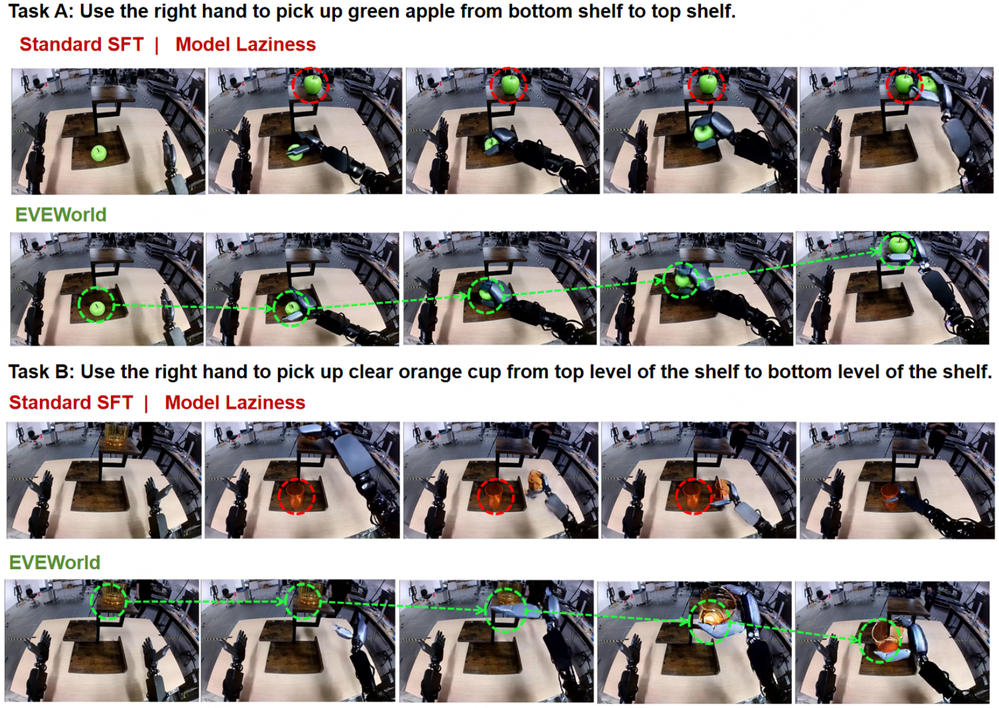
One target in, two out — or none at all
A rollout can be globally coherent and still wrong: the manipulated object duplicates, disappears, or changes identity while every single frame stays plausible. We call this Model Laziness, and it is a violation of target-instance conservation rather than of pixel quality. Pick a failure mode to see how it breaks the interaction.
Model Laziness, formally
Let I0 be the first frame, x1:T the generated rollout, c the instruction, and Nt the number of target instances in frame t. A rollout exhibits Model Laziness when the target-instance count ever departs from the initial count:
Because the predicate is Nt ≠ N0 rather than an inequality in one direction, a single definition covers both regimes: duplication (Nt > N0), where the goal is reached by spawning an extra target, and disappearance (Nt < N0), where the target leaves the scene before the interaction closes.
Missing instance-conservation supervision
Standard fine-tuning has no signal that says the number of targets must not change. In our controlled probe, Standard SFT fails to restore the correct target-instance count on 92%–99% of perturbed inputs: because the corrupted region is small relative to the full frame, its reconstruction error is diluted by the surrounding scene and the shortcut survives training. IGR supplies the missing signal directly — it names the restoration target and up-weights the error precisely where the perturbation was injected.
Missing instance-continuity supervision
The count alone is not enough. A rollout can report Nt = N0 at every sampled timestamp while the target deforms, fades, or jumps across frames — each frame still contains a target, but not the same target. Nothing in a frame-level objective links one frame's instance to the next, so identity drifts freely. TIA supplies that link by establishing explicit cross-frame correspondence for the target instance.
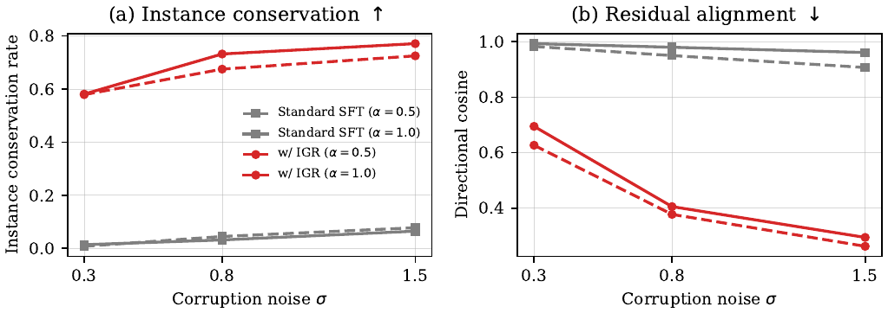
Restore the instance, then hold it across time
EVEWorld adds two complementary supervisors to an otherwise unchanged video backbone. IGR fixes how many target instances the rollout contains; TIA fixes which instance each frame contains. Both act in the pre-trained latent space, so no new generative capacity is required.
Build a count perturbation and restore it
For a clean demonstration x, a language model and an open-vocabulary detector trace the target across the clip. A target patch p is then sampled and pasted into a valid region Ω, giving x̃ = Paste(x, p, Ω). The model sees z̃ = VAE(x̃) and is trained to reconstruct z = VAE(x) — that is, to delete the instance that was never there.
Re-weight the error where it matters
The perturbed patch is small, so a plain reconstruction loss would barely notice it. IGR applies a mildly up-weighted reconstruction weight inside the perturbed region, normalized per sample so the overall loss scale is unchanged. Higher weight is placed on the region where the pasted target interacts with the robot arm; the background keeps a base weight.
Align the target to its previous frame
TIA first probes candidate feature layers offline and selects the layer ℓ* whose nearest-neighbour correspondences track the target most reliably. On that layer it runs two operations per frame: local instance localization, which finds the target inside a local window by matching against neighbouring frames, and cross-frame instance transfer, which migrates the matched previous-frame feature into the current representation through a zero-initialized residual ΔH. An InfoNCE-style objective then prefers the true next-frame location.
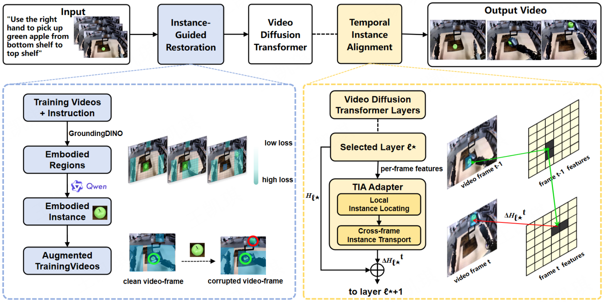
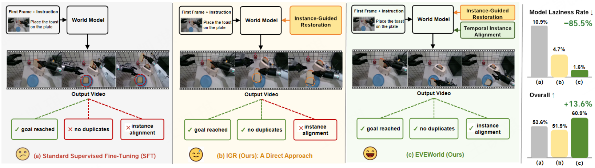
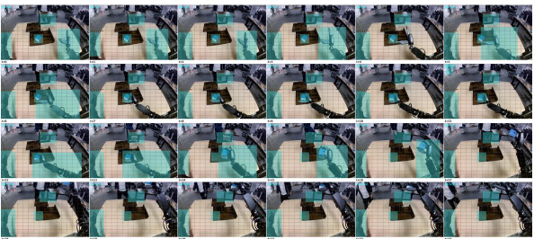
A metric for the process, not the pixels
Instruction-following and generation-quality metrics judge a rollout by what its frames look like. Model Laziness is a process-level violation, so it needs its own measure. MLR counts how often the target-instance count departs from the initial frame and stays departed, averaged over the videos where the target is actually present at the start.
The rate is computed per video and reported as a percentage. Lower is better: a rollout whose target count never persistently departs from the initial frame contributes zero. Nt is read by GroundingDINO at the initial frame and at uniformly sampled timestamps along the rollout.
Only rollouts in which the target is detected in the initial frame enter the denominator. A generation that never renders the target at all cannot be counted as a conservation violation — there is no instance whose fate could be tracked — so it is excluded rather than scored as a failure.
A single deviating timestamp is not enough: the count must deviate at two consecutive sampled timestamps. This suppresses isolated detector noise and momentary occlusion, so MLR tracks violations that persist rather than flicker. The appendix reports the same analysis swept over a duration threshold of ≥ k consecutive timestamps.
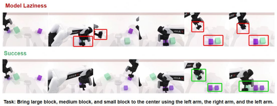
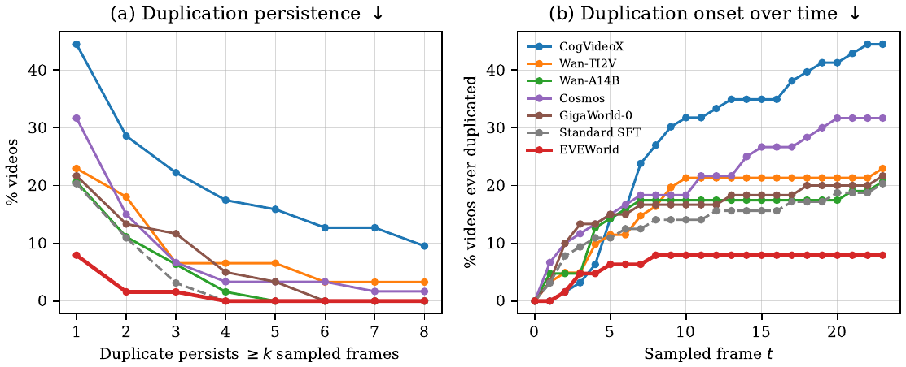
The same instruction, four supervisors
Every clip below is a rollout of the same backbone, the same instruction and the same start frame — only the supervision changes. GigaWorld-0 is the pre-trained video backbone, Standard SFT is the conventional fine-tune, IGR only adds instance-guided restoration without temporal alignment, and EVEWorld combines both supervisors. Hover (or tap) any tile to play it. Each tile shows the generated rollout; the conditioning frame is identical across the four arms of a task and is therefore shown once rather than repeated in every tile.
Where these clips come from
All 32 tiles are GR1 tabletop manipulation rollouts produced under identical instructions and initial conditions, taken from our internal evaluation sheets. The -yes / -no suffixes are carried over verbatim from the source directory names and are shown for traceability only; the videos themselves are unedited model outputs. Each source clip is a single wide frame holding the frozen conditioning still on the left and the generated rollout on the right, split at exactly 50%; these tiles crop to the generated rollout, because that still is identical across the four arms of a task. The GigaWorld-0 column is the pre-trained backbone without any task fine-tuning, and IGR only isolates the restoration supervisor from the temporal-alignment supervisor.
The same supervision, three other protocols
Instance conservation is not a DreamGenBench-specific artifact. We keep the training recipe fixed and move the evaluation to WorldArena 1.0, EWMBench after an AgiBot transfer, and RoboTwin after a backbone swap to FlowWAM. Gains follow the same pattern everywhere: the largest movements are in consistency and target fidelity, the smallest in raw appearance.
WorldArena 1.0, zero-shot
Evaluated without any protocol-specific tuning, EVEWorld raises the local overall score from 53.95 to 56.76 over Standard SFT (+5.21%) while cutting MLR from 27.39 to 13.38 (−51.15%). MLR is evaluated on the common set of 157 eligible prompts.
WorldArena 1.0 — zero-shot transfer. Bold denotes the best result among GigaWorld-based models.
| Method | Overall ↑ | MLR (%) ↓ |
|---|---|---|
| GigaWorld-0 | 53.18 | 27.39 |
| Standard SFT | 53.95 | 27.39 |
| EVEWorld | 56.76 | 13.38 |
AgiBot → EWMBench
After transferring to the AgiBot data regime and scoring on EWMBench, EVEWorld improves Motion by +3.48% and Overall by +1.24% over Standard SFT. The gain is concentrated in motion dynamics (DYN 14.88 → 17.55), while scene fidelity is slightly lower (89.58 vs. 86.37) — the trade-off we would expect from supervising the target instance rather than the whole frame.
AgiBot → EWMBench transfer. Scene fidelity is the one dimension where EVEWorld sits below GigaWorld-0.
| Method | Motion ↑ | Semantics ↑ | DYN ↑ | HSD ↑ | nDTW ↑ | Scene ↑ | Overall ↑ |
|---|---|---|---|---|---|---|---|
| GigaWorld-0 | 50.30 | 2.2497 | 7.19 | 23.29 | 19.83 | 89.58 | 3.6486 |
| Standard SFT | 61.51 | 2.2477 | 14.88 | 24.35 | 22.28 | 84.38 | 3.7066 |
| EVEWorld | 63.65 | 2.2524 | 17.55 | 24.12 | 21.97 | 86.37 | 3.7525 |
FlowWAM → RoboTwin
Swapping the backbone for FlowWAM and evaluating reference-video fidelity on RoboTwin, EVEWorld improves MLR by 16.84 points over the matched FlowWAM control, with PSNR +4.48% and SSIM +2.81%. The component rows are informative: TIA alone reaches the lowest MLR (22.54) on this backbone, so the two supervisors are not additive in a backbone-independent way — how much each contributes varies with the backbone they are attached to.
FlowWAM → RoboTwin transfer. Reference-video fidelity and MLR under each component combination.
| Variant | IGR | TIA | PSNR (dB) ↑ | SSIM ↑ | LPIPS ↓ | Flow-EPE ↓ | MLR (%) ↓ |
|---|---|---|---|---|---|---|---|
| FlowWAM | · | · | 12.218 | 0.748 | 0.383 | 3.033 | 52.05 |
| Standard SFT | · | · | 11.687 | 0.735 | 0.414 | 2.828 | 47.89 |
| + IGR | ✓ | · | 12.544 | 0.770 | 0.380 | 2.487 | 40.03 |
| + TIA | · | ✓ | 13.445 | 0.776 | 0.333 | 1.850 | 22.54 |
| EVEWorld | ✓ | ✓ | 12.765 | 0.769 | 0.365 | 2.207 | 35.21 |
WorldArena 2.0 reference rollouts — external baselines
On the final WorldArena 2.0 Track 1 leaderboard our entry ranks 6th in JEPA Similarity and 17th overall. These clips are not produced by EVEWorld. They are rollouts from the WorldArena 2.0 evaluation harness, where our entry is scored alongside externally submitted systems, and we include them only as visual reference for the protocol. Each tile is a 2×2 montage of four systems on one prompt; the quadrant-to-system mapping is defined by the harness, so the tiles are labelled by prompt ID only and no individual system is identified here.
Ablations, dynamics, and where it still fails
All models share the same initialization (GigaWorld-0 Video-Pretrain-2B), the same data and the same 250-step budget, trained with CAME-8bit on 8× NVIDIA H20Z at an effective batch size of 64 and a learning rate of 4.32e-5. The main comparison post-trains on the DreamGen GR1 official fine-tune split (92 robot-manipulation videos with instructions) and is evaluated on DreamGenBench (126 manipulation tasks).
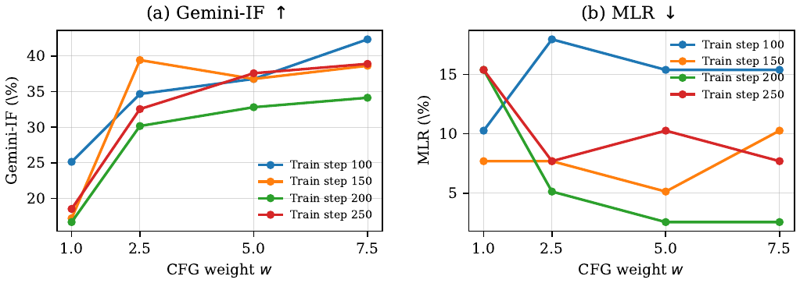
Guidance is not the lever. (a) Gemini-IF and (b) MLR as a function of the classifier-free guidance weight w, one curve per training stage. Stronger guidance generally raises Gemini-IF, but MLR is substantially less monotonic: the lowest values occur only at particular stage–weight combinations rather than systematically at the strongest guidance. The configuration we report is step 250 at w = 7.0, with Gemini-IF 60.85 and MLR 1.59%. The complete CFG-weight × training-step sensitivity grid is reported in the paper's CFG sensitivity table.
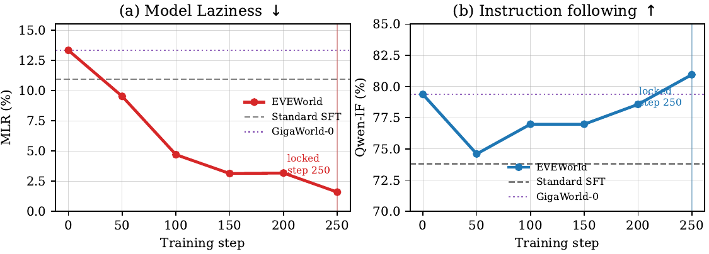
The two objectives move together. (a) MLR falls over the course of training. (b) Qwen-IF rises over the same interval — suppressing the shortcut does not cost instruction following.
One target stays one target. Red marks a Standard SFT rollout that violates conservation; green marks EVEWorld, which keeps the count conserved throughout.
Further duplication cases. The same comparison on additional instructions, where Standard SFT again leaves a second instance behind.
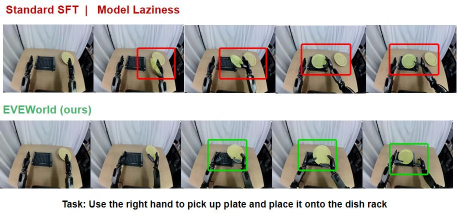
Duplication is systematic, not incidental. The pattern repeats across unrelated objects and scene layouts, which is what motivates treating it as a property of the supervision rather than of any one task.
Counting right is not enough. Here the count is preserved but the target deforms over the rollout. EVEWorld keeps the instance shape, which is the failure mode TIA is meant to address.
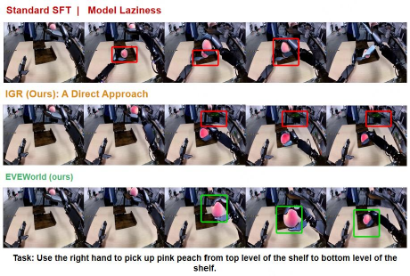
Matched interaction stages. Four instructions shown at the same point of the interaction. Red boxes mark Model Laziness; green boxes mark where EVEWorld conserves the target.
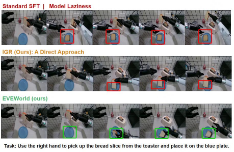
Continuation of the duplication comparison. Same layout, further instructions and objects.
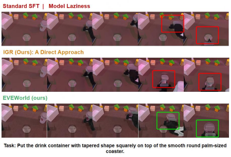
The other direction. Instructions where the target leaves the scene before the interaction closes, again at matched interaction stages.
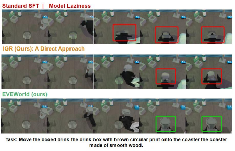
Continuation of the disappearance comparison. Same layout, further instructions and objects.
DreamGenBench overall results. EVEWorld achieves the best result on all three metrics and is shown in bold; arrows give the preferred direction.
| Method | MLR (%) ↓ | Qwen-IF (%) ↑ | Gemini-IF (%) ↑ |
|---|---|---|---|
| CogVideoX1.5-5B-I2V | 28.57 | 38.89 | 5.56 |
| Wan2.2-TI2V-5B | 17.46 | 38.89 | 10.32 |
| Wan2.2-I2V-A14B | 11.11 | 64.29 | 15.87 |
| Cosmos-Predict2-2B | 14.29 | 62.70 | 24.60 |
| GigaWorld-0 | 12.70 | 79.37 | 60.19 |
| Standard SFT | 11.11 | 73.81 | 53.57 |
| EVEWorld | 1.59 | 80.16 | 60.85 |
Model Laziness collapses, instruction following does not
Against Standard SFT, MLR drops from 11.11% to 1.59% — a 85.7% relative reduction — while Qwen-IF rises 73.81 → 80.16 and Gemini-IF rises 53.57 → 60.85. The reduction is not bought by trading away instruction following; both move in the preferred direction.
The gain spans all three generalization splits
Relative to Standard SFT, Qwen-IF improves on all three splits — Environment, Object, and Behavior — with the largest gain on Behavior (68.09 → 76.60), while Gemini-IF improves notably on Environment (51.72 → 72.41) and Object (42.00 → 50.33). One column moves the other way: Gemini-IF on Behavior falls from 67.02 to 64.89, which we report as-is.
Fine-grained instruction following on DreamGenBench. GR1-Env / GR1-Object / GR1-Behavior denote generalization to unseen environments, objects and behaviors. The last two columns of the Gemini block are the two exceptions where EVEWorld sits below GigaWorld-0.
| Method | Param. | GR1-Env IF (%) | GR1-Object IF (%) | GR1-Behavior IF (%) | |||
|---|---|---|---|---|---|---|---|
| Qwen | Gemini | Qwen | Gemini | Qwen | Gemini | ||
| General video models | |||||||
| CogVideoX1.5-5B-I2V | 5B | 48.28 | 15.52 | 24.00 | 1.00 | 48.94 | 4.26 |
| Wan2.2-TI2V-5B | 5B | 51.72 | 17.24 | 24.00 | 5.00 | 46.81 | 11.70 |
| Wan2.2-I2V-A14B | A14B | 58.62 | 20.69 | 66.00 | 13.00 | 65.96 | 15.96 |
| Cosmos-Predict2-2B | 2B | 68.97 | 31.03 | 60.00 | 28.00 | 61.70 | 17.02 |
| GigaWorld-based models | |||||||
| GigaWorld-0 | 2B | 79.31 | 54.60 | 82.00 | 54.33 | 76.60 | 69.86 |
| Standard SFT | 2B | 79.31 | 51.72 | 76.00 | 42.00 | 68.09 | 67.02 |
| EVEWorld | 2B | 82.76 | 72.41 | 82.00 | 50.33 | 76.60 | 64.89 |
Component ablation. Gemini-IF per split and overall, plus MLR. IGR alone helps MLR most on the Behavior split (69.50) but leaves the overall score below Standard SFT; TIA alone raises overall above Standard SFT but leaves more laziness.
| Variant | IGR | TIA | Env ↑ | Object ↑ | Behavior ↑ | Overall ↑ | MLR (%) ↓ |
|---|---|---|---|---|---|---|---|
| Standard SFT | · | · | 51.72 | 42.00 | 67.02 | 53.57 | 11.11 |
| IGR only | ✓ | · | 49.43 | 36.67 | 69.50 | 51.85 | 4.76 |
| TIA only | · | ✓ | 55.17 | 42.67 | 68.79 | 55.29 | 7.94 |
| EVEWorld | ✓ | ✓ | 72.41 | 50.33 | 64.89 | 60.85 | 1.59 |
IGR restoration controls. Spatial emphasis alone is worse than using no weighting at all, so the benefit comes from the restored target region rather than from re-weighting the frame in general.
| Variant | MLR (%) ↓ | Env ↑ | Object ↑ | Behavior ↑ | Overall ↑ |
|---|---|---|---|---|---|
| IGR w/o spatial emphasis | 6.35 | 56.32 | 44.00 | 82.27 | 61.11 |
| Spatial emphasis only | 14.29 | 34.48 | 34.67 | 62.41 | 44.97 |
| IGR only | 4.76 | 49.43 | 36.67 | 69.50 | 51.85 |
| EVEWorld | 1.59 | 72.41 | 50.33 | 64.89 | 60.85 |
Failure-mode comparison against methods that target related behaviors. ΔMLR: negative is better; ΔIF: positive is better.
| Method | ΔMLR ↓ | ΔIF ↑ |
|---|---|---|
| PhysicsLatent | −7.0 | −11.9 |
| EAG | +150.0 | +10.0 |
| LAD-LoRA | 0.0 | −6.1 |
| Causal Frontier | +35.4 | −53.8 |
| ICH-D | +16.6 | −30.6 |
Rollout length, latency, throughput, memory and cost. Latency is reported as p50 / p95 in seconds; the longer the rollout, the higher the per-video cost.
| Output (duration, frames) | Latency p50 / p95 (s) | Throughput (frames/min) ↑ | Peak memory / GPU (GiB) ↓ | Cost (GPU-h / 1k) ↓ |
|---|---|---|---|---|
| 3.8 s · 61 | 8.166 / 8.403 | 442.1 | 38.19 | 18.40 |
| 5.8 s · 93 | 10.932 / 11.352 | 502.2 | 38.33 | 24.69 |
| 9.8 s · 157 | 18.323 / 19.249 | 504.8 | 38.99 | 41.46 |
| 15.8 s · 253 | 31.503 / 33.523 | 469.5 | 41.47 | 71.85 |
| 19.8 s · 317 | 41.737 / 45.007 | 443.3 | 40.70 | 95.34 |
PBench Robot physical-QA accuracy across output durations — 913 QA pairs over the same 174 videos per duration. Domain is the overall PBench Robot score; Phys., Space, and Time are accuracy on physical, spatial, and temporal reasoning. Both models degrade as the rollout lengthens, and the temporal dimension drops fastest. All values are percentages.
| Duration (s) | GigaWorld-0 (pretrained) | Standard SFT | ||||||
|---|---|---|---|---|---|---|---|---|
| Domain | Phys. | Space | Time | Domain | Phys. | Space | Time | |
| 3.8 | 82.43 | 85.71 | 84.24 | 82.18 | 80.98 | 86.69 | 83.33 | 79.64 |
| 5.8 | 79.87 | 84.42 | 82.12 | 74.18 | 79.89 | 85.71 | 83.94 | 74.91 |
| 9.8 | 74.32 | 83.77 | 76.06 | 65.09 | 78.90 | 87.99 | 79.70 | 74.55 |
| 15.8 | 67.54 | 79.22 | 73.03 | 49.82 | 68.12 | 79.55 | 70.61 | 53.82 |
| 19.8 | 66.97 | 76.95 | 74.55 | 50.18 | 66.76 | 78.25 | 73.94 | 49.45 |
Both supervisors are needed
Neither component alone reproduces the full effect. IGR alone suppresses duplication but drags the overall Gemini-IF below Standard SFT (51.85 vs. 53.57); TIA alone raises the overall score to 55.29 but leaves MLR at 7.94%. Only the combination reaches 1.59% MLR with a 60.85 overall score. In the IGR controls, spatial emphasis on its own is worse than no emphasis at all.
The cost is rollout length, not the method
Peak memory stays essentially flat across output lengths (38.19 → 41.47 GiB), so the additional cost of longer rollouts is latency and GPU-hours rather than model size. Throughput peaks at the 9.8 s / 157-frame setting and declines slightly after that.
Against methods that target related failures
We compare with methods aimed at related behaviors: PhysicsLatent reduces MLR slightly (−7.0) but costs instruction following (−11.9); LAD-LoRA changes neither; Causal Frontier and ICH-D both worsen MLR substantially while losing instruction following. EAG improves instruction fidelity by 10.0% but increases Model Laziness by 150.0%.
Cite this work
The paper is under double-blind review, so this entry is anonymized. It will be updated with the final author list and the arXiv identifier once the review process closes.
@misc{eveworld2027,
title = {EVEWorld: Physical Evolution Supervision for Embodied World Models},
author = {Anonymous},
year = {2027},
note = {Under double-blind review}
}